Doctor Chamber
Doctor Chamber
Dr. Hardeep Singh Consultation Chamber
Senior doctor conducting physical patient consultation and empathetic diagnosis in OPD 1.
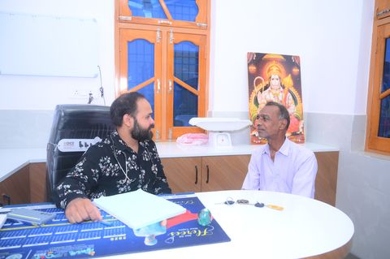
Doctor ChamberClinical Patient Consultation in Progress
Dr. Hardeep Singh discussing patient medical history and tailored clinical treatment plan.
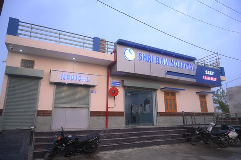
Main EntranceMain Hospital Entrance & Illuminated Signage
Front roadside facade with bright LED signboards, ramp entry, and dispensary access.
 Reception Lobby
Reception Lobby
Patient Waiting Lounge & Reception
Comfortable steel chairs with inspirational Sanskrit shloka mural on the wall (सर्वे भवन्तु सुखिनः).
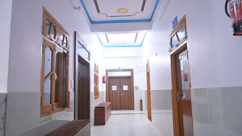
Ground CorridorHospital Ground-Floor Corridor
Clean, well-lit hallway connecting consultation chambers, waiting lounge, and Emergency.
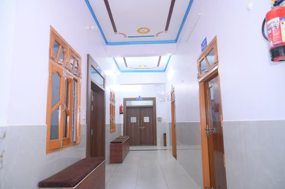
Corridor & SeatingOPD Transit Corridor & Wall Seating
Cushioned wall benches, fire safety systems, and direct consultation room connectivity.
 Daycare Ward
Daycare Ward
Daycare Observation Ward (5 Beds)
Sanitized blue-mattress recovery beds equipped with IV drip infusion stands and ceiling fans.
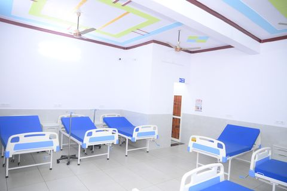
Daycare WardPatient Recovery Ward Beds
Hygienic short-stay beds for fluid hydration, antipyretic therapy, and rapid clinical recovery.
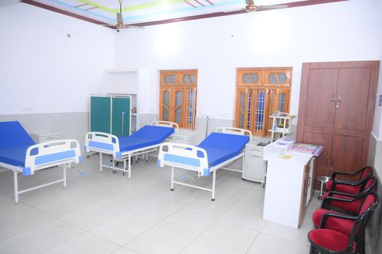
Daycare WardWard Care Station & Recovery Beds
Equipped nurse monitoring station, bedside storage tables, and comfortable recovery beds.
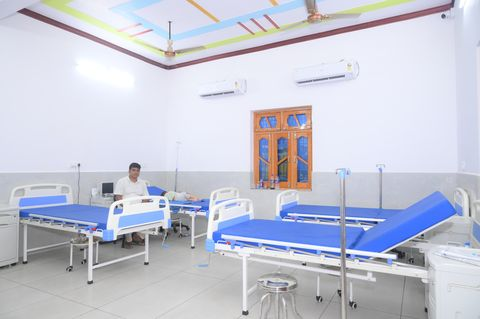
Daycare WardAir-Cooled Patient Observation Room
Equipped with dual split air conditioning for comfortable patient recovery in any weather.
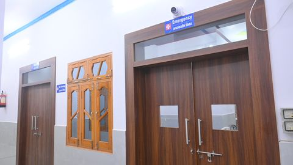
24/7 Emergency24/7 Emergency Department Entry
Dedicated double doors for rapid acute patient intake and round-the-clock emergency care.
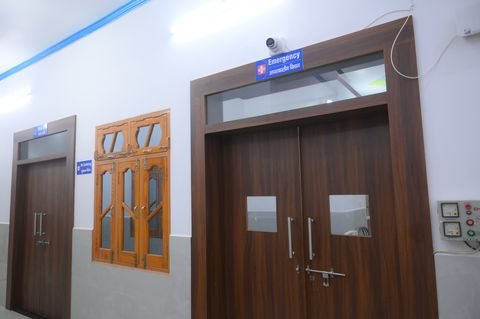
Emergency & OTEmergency & Minor O.T. Department
Designated wing for immediate clinical trauma management, wound care, and minor procedures.
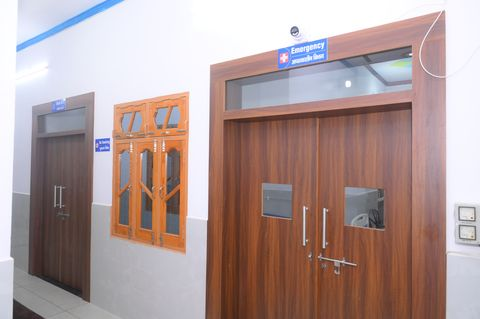
Emergency UnitEmergency Department Direct Access
Wide-access corridor designed for swift stretcher movement and urgent patient care.
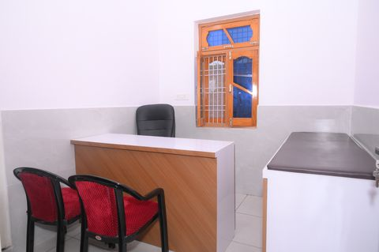
Examination RoomDoctor Examination Room & Couch
Private examination room with cushioned examination couch, doctor desk, and patient chairs.
 Doctor Chamber
Doctor Chamber
Dr. Hardeep Singh (Senior Specialist)
Chief consultant at his consultation desk with clinical stethoscope and diagnostic equipment.
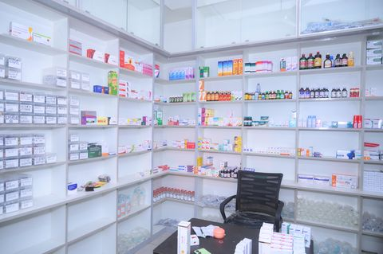
In-House Pharmacy24/7 In-House Medical Pharmacy
Fully stocked white shelves with genuine branded antibiotics, pediatric drops, and syrups.
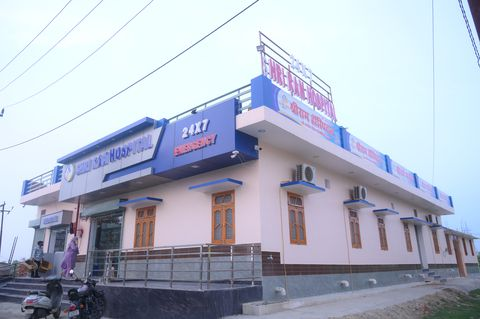
Pharmacy CounterPharmacy Storage & Dispensary Stock
Organized pharmaceutical inventory ensuring patient convenience without leaving premises.
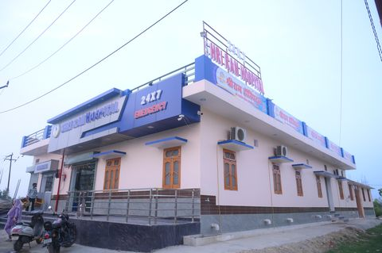
Hospital CampusShri Ram Hospital Main Campus Exterior
Complete building facade with 24x7 Emergency rooftop sign, roadside ramp, and parking.
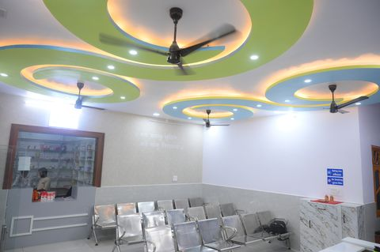
Reception & PharmacyPatient Waiting Lounge & Dispensing Window
Integrated waiting area with stainless steel chairs and direct medicine dispensing window.